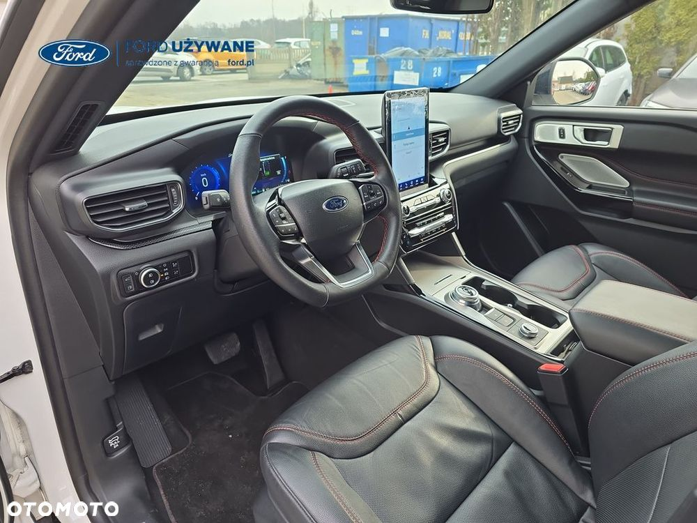
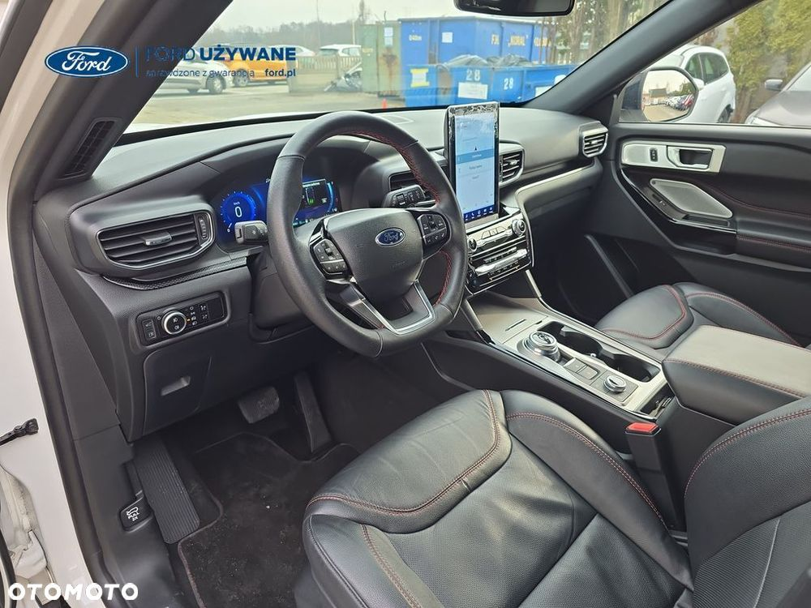

Autoryzowany dealer Ford Frank-Cars w Częstochowie oferuje: FORD Explorer St-line 3.0 V6 EcoBoost BiTurbo 457KM Samochód dostępny od ręki! Rok produkcji 2024 Data I rej.: 27.11.2024 ─────────────────────────────────────────────────────────────── Doradca ds. sprzedaży samochodów używanych Dariusz Wasik ☎ Daniel Zuterek ☎ ─────────────────────────────────────────────────────────────── Wyposażenie dodatkowe zamontowane fabrycznie, Hak holowniczy demontowalny - z elektrycznym złączem 13-pinowym i stałym zasilaniem (zawiera system stabilizacji toru jazdy przyczepy (TSC) Lakier metalizowany specjalny - Star White Wyposażenie standardowe wybrane elementy : Blind Spot Information (BLIS) z Cross Traffic Alert (CTA) - system monitorowania martwego pola widzenia w lusterkach z funkcją ostrzegania o pojazdach nadjeżdżających z prawej lub lewej strony, podczas manewru wyjazdu tyłem z prostopadłego miejsca parkingowego eCall - system automatycznego wzywania pomocy Elektryczny hamulec postojowy z funkcją Auto Hold Hamulec pokolizyjny Lane Keeping Alert (zawiera: Lane Keeping Aid (system wspomagający utrzymanie pojazdu na pasie ruchu), Driver Alert (system monitorowania koncentracji kierowcy) Pre-Collision Assist 1) - system wspomagający kierowcę w unikaniu lub zmniejszaniu skutków kolizji z poprzedzającymi pojazdami lub pieszymi (wykorzystuje kamerę przednią oraz radar; zawiera: Forward Collision Warning, Dynamic Brake Support, Distance Alert, Distance Indicator, Automatic Emergency Braking, Evasive Steering Assist) Speed Sign Recognition - system rozpoznawania znaków ograniczenia prędkości System wspomagajacy zjazd ze wzniesienia (Hill Descent Control) System zapobiegający wywróceniu pojazdu (RSC) System wyboru trybu jazdy - 7 trybów: Normalny, Sportowy, Eko, Śliska nawierzchnia, Droga nieutwardzona. Śnieg/Piasek, Holowanie System wyboru trybu pracy napędu hybrydowego (Auto EV, EV teraz, EV później, Ładowanie EV) System nawigacji satelitarnej MP3 z SYNC3, DAB+ i B&O – kolorowy wyświetlacz dotykowy 10", Apple CarPlay, Android Auto, TMC (informacja o ruchu drogowym), zestaw głośnomówiący z Bluetooth® i rozbudowaną funkcją sterowania głosem w języku polskim oraz funkcją wzywania pomocy, system nagłośnienia B&O (wzmacniacz 980 W, 13 głośników + subwoofer), 2 gniazda USB, zdalne sterowanie na kierownicy, mapy Europy z widokiem 3D, menu tekstowe i komunikaty głosowe nawigacji w języku polskim) Wyświetlacz na tablicy zegarów - 12.3" kolorowy, konfigurowalny Klimatyzacja - trzystrefowa z automatyczną regulacją temperatury oraz dodatkowym panelem sterowania dla tylnej części kabiny 2 złącza USB w tylnej części konsoli środkowej Active Noise Control - system aktywnej redukcji hałasu Adaptive Cruise Control ze Stop & Go i Lane Centering Assist - tempomat adaptacyjny z funkcją automatycznego zatrzymania i ponownego rozpoczęcia jazdy oraz funkcją utrzymywania pośrodku pasa ruchu Bezprzewodowa ładowarka do smartfonów Konsola centralna - gniazdko 230V w tylnej części konsoli środkowej Lusterko wsteczne – ściemniające się automatycznie Fotele - tapicerka skórzana perforowana ciemna z czerwonymi przeszyciami Fotele w drugim rzędzie - zewnętrzne fotele podgrzewane, z podłokietnikiem na środku, składane na płasko i przesuwane niezaleznie Fotele w trzecim rzędzie - składane i podnoszone elektrycznie (PowerFold), składane na płasko Przednie fotele - elektryczna regulacja położenia fotela kierowcy Przednie fotele - podgrzewane oraz wentylowane, z regulacją temperatury Rolety przeciwsłoneczne dla pasażerów drugiego rzędu foteli Roleta zasłaniająca przestrzeń bagażową Inteligentny naped na wszystkie koła Zawieszenie – sportowe Koło zapasowe dojazdowe – z obręczą stalową 18" Obręcze kół ze stopów lekkich - 20", Active Park Assist 2 - system automatycznego parkowania równoległego i prostopadłego oraz wyjazdu z równoległego miejsca parkingowego, z funkcją automatycznego hamowania podczas wyjazdu tyłem z miejsca parkowania prostopadłego Czujniki parkowania – z przodu i z tyłu Drzwi bagażnika otwierane elektrycznie Ford EasyFuel - system bezkorkowego wlewu paliwa, zapobiegający zatankowaniu niewłaściwego rodzaju paliwa Przednia szyba – podgrzewana (Quickclear) Reflektory - w techologii LED z funkcją samopoziomowania Reflektory - w techologii LED z funkcją samopoziomowania Reflektory automatyczne z systemem automatycznego sterowania światłami drogowymi Auto High-Beam System kamer 360 stopni Wycieraczki przedniej szyby – sterowane automatycznie, z czujnikiem deszczu Dach panoramiczny - otwierany, z roletą przeciwsłoneczną sterowaną elektrycznie, z funkcją otwierania przednich szyb bocznych za pomoca przycisku na kluczyku Dodatkowo przyciemniane szyby – w tylnej części nadwozia Lusterka boczne – sterowane, podgrzewane i składane elektrycznie, ze zintegrowanymi kierunkowskazami LED, lampkami oświetlającymi podłoże oraz funkcją pamięci położenia Pakiet przygotowujacy do montażu haka holowniczego Przednie światła przeciwmgielne - w technologii LED ─────────────────────────────────────────────────────────────── Samochód sprzedawany przez Autoryzowanego Dealera Marki Ford. Frank-Cars Częstochowa, ul. Jagiellońska 147/151 Przygotujemy dla ciebie ofertę Leasingową lub Kredytową. W ofercie posiadamy Ubezpieczenia dedykowane dla Forda. Zadzwoń i uzyskaj dodatkowe informacje na temat samochodu: „Niniejsze ogłoszenie jest wyłącznie informacją handlową i nie stanowi oferty w myśl art. 66, § 1. Kodeksu Cywilnego. ID12102015


 
